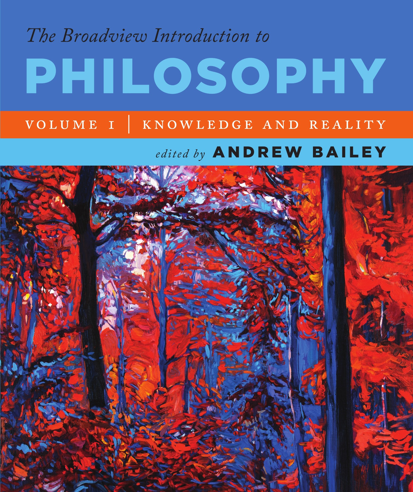

|
Note: This syllabus,
the assignments, and other aspects of
the course are all
subject to revision as we go, as
needed. After all, we're
still in a pandemic.
|
Your host: Jeremy Anderson
E-mail: jeremyanderson@depauw.edu
Web: http://jeremyanderson.net
Phone: On campus, ext. 4679. From off campus, 765-658-4679. Messages will forward to my email.
Office: My virtual office is here on Google Meet. (I will rarely be in my physical office, Asbury 209.)
Office hours: My office hours are MWF 10:30 - 11:30AM; other times by appointment. I can likely meet with you MWF after 2:45PM. (Times are Eastern Standard Time (UTC-5:00) until March 14, when we switch to Eastern Daylight Time (UTC-4:00).)
Web: http://jeremyanderson.net
Phone: On campus, ext. 4679. From off campus, 765-658-4679. Messages will forward to my email.
Office: My virtual office is here on Google Meet. (I will rarely be in my physical office, Asbury 209.)
Office hours: My office hours are MWF 10:30 - 11:30AM; other times by appointment. I can likely meet with you MWF after 2:45PM. (Times are Eastern Standard Time (UTC-5:00) until March 14, when we switch to Eastern Daylight Time (UTC-4:00).)
Course goals
I want to
acquaint you with philosophy’s content and techniques,
and sharpen your writing and thinking. Through reading,
lecture, discussion, and writing you’ll get to
know philosophy’s major divisions, including
epistemology, metaphysics, and ethics, and some of the
puzzles that philosophers think about. Is the outside
world as it appears to be? Does God exist? Are we free?
How should we lead our lives? You will learn about and
evaluate major thinkers' answers to questions like
these. You will also enhance your critical thinking
skills so that your beliefs can be better grounded in
logic, deepened by an understanding of the issues at
stake, and tempered with an appreciation of opposing
views. 
Texts
Our textbook
will be The
Broadview Introduction to Philosophy, Volume I.
There are several versions of this textbook; we're using
Volume I, with the blue cover pictured here.
You can get it as a physical book (ISBN 9781554814015) or as a PDF (ISBN 9781770487550, available on Google Play). Page numbers of the different versions may vary. Any readings not in BIP will be available on our Google drive.
You can get it as a physical book (ISBN 9781554814015) or as a PDF (ISBN 9781770487550, available on Google Play). Page numbers of the different versions may vary. Any readings not in BIP will be available on our Google drive.
Grading & Assignments
As you might
expect, your grade will depend on how well you
demonstrate you understand, and have thought about,
material brought up in readings, lectures,
presentations, and discussion. If and when any
independent research is required (normally it's not),
your grade will also depend on the quality of that
research and on demonstrating you understand and have
thought carefully about the material. Grades will be
derived as follows:
Speaking & listening
Writing
Exams
A list of possible assignments is posted to the class web site. Details and timing are subject to change. Dates for assignments, exams, etc. will be posted on our class schedule Google Doc.
Course
PoliciesSpeaking
& listening:
Writing:
Exams:
5%
participation
Writing:
10%
Reading responses
30% Three papers @ 10% each
30% Three papers @ 10% each
Exams:
10%
Midterm exam 1
15% Midterm exam 2
30% Final exam
15% Midterm exam 2
30% Final exam
Speaking & listening
Participation means
showing you are thinking about the course. That is not
hard. The best way is to
participate in class discussions, but you can also get
credit for discussing course-related things outside of
class: in person, by e-mail, or posting to the open
forum on Moodle. You can
earn up to one point per class meeting (i.e., three
points per normal week). Earning
one point per week, by whatever means, will earn you a
B (85%) for participation. Participating less often
earns a lower grade; more often earns a higher grade.
Seventeen
points total, with at least one point earned per week,
will get you an A+ (100%).
Writing
Reading
responses: Each assignment includes some
reading questions. Asking you to write answers to all
of them would be too demanding. So I ask that you
answer some, and that you do it regularly. Here's what
I mean by "some" and "regularly": at least once
per week, write a response to at least one
reading question, before class, in the forums
set up on Moodle. (If Moodle is down, e-mail it
to me.)
Reading responses are graded credit/no
credit. To get credit, yours should:
- Be on
time. Your response should be in the right
Moodle forum (they
are here) and time-stamped by one hour
before class starts. (Suggestion: turn them in the evening before
class.)
- Total at least 200 words. I
mean, your answer(s)
should total at least 200
words. Putting in your name, typing in the
question, bibliographies, etc. do not count.
Answering more than one reading question per
assignment counts as one response.
- Respond thoughtfully and
completely to one or more reading questions.
- Be carefully proofread, and meet the
academic integrity requirements for all
writing in this course (for example, just
giving a "Works Cited" at the end is not enough;
you must cite within your response). Too many/too serious errors in
citation, grammar, spelling, punctuation, etc.
will keep a response from getting credit. Integrity problems may also be
charged as violations of DePauw's
Academic Integrity Policy.
To earn
a B (85%), do one passing reading response per week.
To earn an A+ (100%), do at
least one response each week (passing or not), with a total of
seventeen passing responses
during the semester.
If you
find these instructions confusing, my apologies! Let
me try explaining a different way:
First, to
do one passing
reading response, try answering one reading
question. If your answer is at least 200 words and it
meets the other criteria in the assignment (on time,
answers the question thoughtfully, meets the
requirements for integrity and
proofreading) it gets credit for one reading response.
If it's not at least 200 words, try answering another
question until you've got at least 200 words total.
But no matter how many of that assignment's questions
you answer, it's still just one reading response.
Second, to get an A+ for the assignment, you need 17 passing responses. There are 14 weeks of class. So, doing more than one passing response every week would be more than you need. All you need to do is turn in one per week and, in some weeks, turn in more than one, and see to it you total 17 passing responses by the last week of class.
Still have questions? Please ask. I'm happy to help.
Second, to get an A+ for the assignment, you need 17 passing responses. There are 14 weeks of class. So, doing more than one passing response every week would be more than you need. All you need to do is turn in one per week and, in some weeks, turn in more than one, and see to it you total 17 passing responses by the last week of class.
Still have questions? Please ask. I'm happy to help.
Suggestion:
if you take too long Moodle can log you out, which
could wipe out your work. So try typing your response
using a word processor first, then copy and paste your
response into the forum before the deadline.
Papers: In your
papers you will critically evaluate arguments
discussed in the class. They will allow you to
practice, and improve at, expressing challenging ideas
clearly and accurately and appraising them fairly. Assignments will be posted to the
Papers web page as the time approaches, and we will
take class time to discuss assignments and help you
improve your writing before turning in final drafts.
Exams
There will
be two midterms and a final. Each will be open book
and open notes. Each will be comprehensive, covering
all material previously discussed in the course. Exams account for 55% of the course grade,
so you should prepare for them. To help you succeed on
exams, I offer several resources besides lecture and
discussion:
- The online study guide identifies what you may be tested on: terms we learn, people we study, the arguments they give, and so on.
- Citations and links in the study
guide direct you to material needed for giving
good answers.
- The study guide also explains
my expectations: how you should be able to
respond to terms, what to know about the people we
study, etc. There are some sample answers there,
too.
- There will be review sessions before
every exam. See the class
schedule Google Doc.
- I can also help you with your answers to items on the study guide during office hours (or by appointment) and by email.
The best
way to prepare: keep up each week. I will add new
items to the study guide roughly each week and notify
you via email. When new items are added, use the texts
and notes (and classmates--group study is often
helpful) to remind yourself of the relevant material,
write out the best answers you can, and study them
periodically.
A list of possible assignments is posted to the class web site. Details and timing are subject to change. Dates for assignments, exams, etc. will be posted on our class schedule Google Doc.
If any of these policies might be a problem for
you, please let me know and let's discuss it.
Privacy policies. For safety during the pandemic this class will be taught remotely. To enable class interaction it will be taught synchronously if possible, meeting via video conference during the hours in the schedule of classes. This means we will be virtually visiting people's living spaces. So, out of respect for classmates, me, and those you live with:
Minimize distractions in class. Please set your cell phone, smart watch, PDA, pager, etc. to vibrate only, and put them aside during class. Find a quiet place to be during class if you can--or if you can't, please mute your microphone when you're not speaking. In other words, be here both physically and mentally as much as possible and help others do the same.
Late policy. Make-up exams will not be allowed nor late papers accepted for full credit except in cases where there is a compelling excuse such as a serious medical problem, University-recognized event, religious obligation, etc. (See Attendance policy, above.) Notify me in advance by phone (765-658-4679), e-mail, or in person, if you can. I may require documentation.
Academic integrity. We learn from others. So I expect words and ideas from other people (readings, classmates, me, research you do, etc.) to show up in your work. But we must acknowledge everyone who helped us. So, whenever others' words or ideas appear in your work, you must cite them whether you quote them or not.
I take academic integrity very seriously and I expect you to. Often, cheating is unintended, but even then it is a serious offense and I may charge you with misconduct. The minimum penalty is usually worse than turning in no work at all, and penalties can include failing the course, suspension, or expulsion. Much plagiarism is due to ignorance of the standards and requirements for documenting sources, so I urge you to:
Letter grades and numerical scores will be related as follows:
Privacy policies. For safety during the pandemic this class will be taught remotely. To enable class interaction it will be taught synchronously if possible, meeting via video conference during the hours in the schedule of classes. This means we will be virtually visiting people's living spaces. So, out of respect for classmates, me, and those you live with:
- Be aware that class
meetings will be recorded to serve as a learning
resource for the class.
- Do not share those recordings or any portion of them outside the class.
- Mind what your camera shows to
others. For example, liquor bottles visible in an
underage student's dorm room could be a problem. So
could racist or otherwise offensive posters or
paraphernalia in the background. Let's avoid that.
Be mindful of DePauw's community
standards and electronic
communications policies.
- I strongly encourage you to keep your computer's camera on during class, but you do not have to.
- There are
advantages to having cameras on. Having faces
visible enables lip-reading and interpreting
facial expressions, which help us better
understand each other. You can prevent others from
seeing your living space by using a background
image or blurred background. So I encourage you to
leave your camera on during class if your internet
connection supports it.
Here are two special situations:
- Academically approved
(by the VPAA) extracurricular activities, such as
athletics: please inform me of possible
conflicts at the beginning of the semester or as
early as possible. I'm willing to work with you ,
but be aware your extracurriculars do not
automatically let you miss class. You must ask
faculty for permission, and we can say "No." Read
the policy here.
- Religious obligations:
I support and follow DePauw's
policy on religious holy days. If your
religious obligations conflict with class meetings
or deadlines in this course, let me know at least
one week in advance. Then (a) you are excused from
attending those meetings and (b) I will work with
you to make up any work you miss.

Suggestion: since
everyone misses class now and then, make a
deal with two
classmates, at the beginning of the
semester, to share notes in case of absences.
To minimize the impact of absences I will upload my notes and recordings of our class meetings and link to them from our Moodle page. But sharing other students' notes is still helpful.
To minimize the impact of absences I will upload my notes and recordings of our class meetings and link to them from our Moodle page. But sharing other students' notes is still helpful.
Minimize distractions in class. Please set your cell phone, smart watch, PDA, pager, etc. to vibrate only, and put them aside during class. Find a quiet place to be during class if you can--or if you can't, please mute your microphone when you're not speaking. In other words, be here both physically and mentally as much as possible and help others do the same.
Late policy. Make-up exams will not be allowed nor late papers accepted for full credit except in cases where there is a compelling excuse such as a serious medical problem, University-recognized event, religious obligation, etc. (See Attendance policy, above.) Notify me in advance by phone (765-658-4679), e-mail, or in person, if you can. I may require documentation.
Academic integrity. We learn from others. So I expect words and ideas from other people (readings, classmates, me, research you do, etc.) to show up in your work. But we must acknowledge everyone who helped us. So, whenever others' words or ideas appear in your work, you must cite them whether you quote them or not.
I take academic integrity very seriously and I expect you to. Often, cheating is unintended, but even then it is a serious offense and I may charge you with misconduct. The minimum penalty is usually worse than turning in no work at all, and penalties can include failing the course, suspension, or expulsion. Much plagiarism is due to ignorance of the standards and requirements for documenting sources, so I urge you to:
- Ask me any questions you have about academic integrity, preferably before you turn in your work.
- Follow the academic
integrity instructions for writing in this
course.
- Get to know DePauw's policy and your
obligations and rights, which are stated
in the Academic Handbook.
- Use these resources to better understand academic integrity at DePauw.
Letter grades and numerical scores will be related as follows:
| 100% = A+ | 87 - 89% = B+ | 77 - 79% = C+ | 67 - 69% = D+ | |
| 93 - 99% = A | 83 - 86% = B | 73 - 76% = C | 63- 66% = D | 59% or less = F |
| 90 - 92% = A- | 80 - 82% = B- | 70 - 72% = C- | 60 - 62% = D- |
If you take the course Pass/Fail:
| 70%
- 100% = Pass |
60% - 69% = D | 59% or less = F |
I assign letter grades using the criteria stated in the University Catalog’s section on Academic Policies.
DePauw and I are committed to providing reasonable accommodations to students with properly documented disabilities--psychiatric, attentional, learning, vision, hearing, physical, medical, etc. If you believe you may need an accommodation because of a disability or learning challenge, please contact Student Accessibility Services to learn how to receive accommodations and support. You must contact them; I cannot do it for you. Student Accessibility Services' phone number is 765-658-6267, their email is studentaccessibility@depauw.edu. Allow one week advance notice to ensure enough time for accommodations to be made. Otherwise, there is no guarantee they can be provided when you need them. I cannot provide accommodations until I receive an official ADA letter detailing the accommodations you may have. Once I receive it, you must discuss with me how to accommodate you in this course. You may choose not to use accommodations, but you must accept the results. Accommodations are not retroactive.
How to succeed in this course.
Read the assignments, and
read carefully.
Reading is
an act of contemplation, perhaps the only act in which
we allow ourselves to merge with the consciousness of
another human being. We possess the books we read,
animating the waiting stillness of their language, but
they possess us also, filling us with thoughts and
observations, asking us to make them part of
ourselves.... In order for this to work, however, we
need a certain type of silence, an ability to filter
out the noise.
David L. Ulin, “The Lost Art of Reading,” Los Angeles Times,
8/9/2009
Make time, in a quiet space, to read. Not just once, not quickly like it’s a news article, but deeply. Turn off your TV, phone, radio, MP3. When reading online, close all other windows, set Skype to offline, turn off chats, and release yourself from Facebook etc. Philosophical texts reward focused, careful, and repeated reading. Besides, you can expect me to call on you with questions about it.
Reading assignments for this course typically consist of a selection written by a philosopher and some introductory material written by the book’s editor, Andrew Bailey. Bailey suggests you read the selection first, and then go back and read the introductory material, and then read the selection again (Preface, p. vii). I recommend following this advice. (The few exceptions are noted on the Reading Assignments page.)
Come to class prepared. Bring the current reading and your notes with you. Bring your responses to the current reading questions with you.
Take detailed notes. Just copying what’s on the board or screen (or whatever I'm doing in class) may not be enough. If the notes you take during class are sketchy, take a moment after class to fill them out.
Participate a lot. Don’t allow yourself to stay confused or lost. Some students assume their questions aren't worth asking or their comments not worth making, but often others wanted to say the same thing. If you are not comfortable speaking in class, see me outside it.
If you miss class, view the recordings of classes you miss and make arrangements with others to share notes with you. I suggest agreeing with at least two other people in the class, at the beginning of the semester, to share notes.
Keep up with the study guide every week. When new items are added to the study guide, sit down with your books and notes and classmates (if you like--studying in groups is helpful) and write out the clearest, most complete and thoughtful answers you can. If you have trouble formulating answers, come see me for help. Study your answers regularly to prepare for class discussion and for exams. This will pay off.
Give yourself time to write good papers, including revising/rewriting them well before the deadline.
Get enough sleep. If that means you cut back on extracurricular activities, so be it, because:
Studies
have shown that sleep quantity and sleep quality equal
or outrank such popular campus concerns as alcohol and
drug use in predicting student grades and a student’s
chances of graduating.
Jane E.
Brody, "An Underappreciated Key to College Success:
Sleep," New York Times,
8/13/2018
You may need to work harder than in high school. The sort of effort that got you A’s in high school might not get you an A here.
Seek help when you need it, or when you think you might need it, or just because. You do not need an appointment to drop in, though we can make one if you like. I do not bite, I promise.
Important Dates
Start submitting reading responses by the end of the first week of class.
Paper deadlines and exam dates will be listed on the class schedule Google Doc and on our Moodle page.
Mid-semester progress reports will be available in 8th week.
DePauw deadlines for dropping the class, withdrawing with a "W," changing to pass/fail, along with other official dates are in DePauw's Academic Calendar.
TOP
.